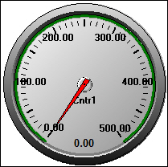
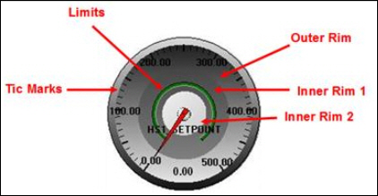

iTest User's Guide
The ADT Gauge display object will display channel data, target values, data quality, limit state and high/low values.
ADT Gauge

General Tab
| Option | Description |
| Value Channel | Click the ... button to open the Channel Selection dialog, which you can use to select the database channel whose name and value you want to display on the ADTGauge. |
| Target Channel | Select the database channel that holds the target value for the control. |
| Control ID | Provides a unique name for the control. This name can be used in mailslot messages to change control properties during runtime on the iTest Console. |
| Label Field | Select a label for the ADTGauge. The default is Automatic. If no alias, description, customer name, or module name was defined for a database channel in its channel definition, the channel name displays by default. |
| Gauge Style | Select whether you want to display a gauge or a meter. |
| Display Units | Affects the channel that is defined. This field will only affect the Value Channel field. |
| Display Precision | Allows you to set the precision for the channel. |
| Show Border | When selected, displays a rectangular border around the ADTGauge. |
| Permit Runtime Changes | When selected, allows changes to be made programmatically. |
| Transparent | Picks up the background color of the display in order to give the object a transparent appearance. |
Scale Tab
| Option | Description |
| Min Value | Specify the low end of the ADTGauge range. |
| Max Value | Specify the high end of the ADTGauge range. |
| Start Angle | The position, in degrees, of the min value of the gauge. This is measured from 0 degrees on a coordinate plane. |
| End Angle | The position, in degrees, of the max value of the gauge. This is measured from 0 degrees on a coordinate plane. |
| Number Major Tics | Specify the number of major tics on the bar. Distance between major tics is calculated by (Max Value - Min Value) / Num Major Tics. For example, if you specify 5 major tics and the Min Value is 0 and the Max Value is 200, then (200-0) / 5 = 40 so major tics will display at 40, 80, 120, 160, and 200. |
| Number Minor Tics | Specify the number of minor tics between each pair of major tics on the bar. |
| Label Every X Tics | Indicate how many major tics will be labeled with their value. |
Needles Tab
| Option | Description |
| Current Value Needle | The Current Value Needle is the needle that shows the value of the channel. Select the Style, Width, Length, Percentage, and Color. The selected color displays in the preview window. |
| Target Value Needle | The Target Value Needle is the needle that shows the value of the target channel (as specified on General tab). Select the Style, Width, Length, Percentage, and Color. The selected color displays in the preview window. |
| High Value Indicator | The High Value Indicator is the needle that shows the highest value that the current value channel has ever reached (since the last reset). Select the Style, Width, Length, Percentage, and Color. The selected color displays in the preview window. |
| Low Value Indicator | The Low Value Indicator is the needle that shows the lowest value that the current value channel has ever reached (since the last reset). Select the Style, Width, Length, Percentage, and Color. The selected color displays in the preview window. |
| Reset Indicators | Reset Indicators clears the high and low values. Select the Style, Width, Length, Percentage, and Color. The selected color displays in the preview window. |
Tics Tab
| Option | Description |
| Major | This is the style for major tic marks. The choices are Circle, Line, Square, or None. Select a color from the list for the associated tic. You can also select a custom color from the list to create a custom color. The color you choose will display in the preview window. |
| Minor | This is the style for minor tic marks. The choices are Circle, Line, Square, or None. Select a color from the list for the associated tic. You can also select a custom color from the list to create a custom color. The color you choose will display in the preview window. |
Use the settings on this tab to alter the look of the rings around the gauge or meter. Values represent a percentage of the radius of the gauge image with the origin at the center point of the ADTGauge control. To determine actual %, multiply the field value by 100. In terms of the meter style, the origin is in the middle of the bottom edge. The rim settings are in layers with the Inner Rim 2 color being displayed on the top, the Inner Rim1 color below that, and the Outer Rim color displayed below all 3 (see example below).
Ring Overview

Example settings:
Outer Rim: 0.6 Inner Rim1: 0.3 Inner Rim2: 0.1 Limits Bar: 0.4 Tic Marks: 0.9
Rings Tab
| Option | Description |
| Outer Rim Radius (%) | Indicates the percent of the total radius of the control. Enter a number between 0 and 1. Type 0 if you do not want the outer rim to display. |
| Inner Rim1 Radius (%) | Indicates the percent of the total radius of the control. Enter a number between 0 and 1. Type 0 if you do not want the inner rim1 to display. |
| Inner Rim2 Radius (%) | Indicates the percent of the total radius of the control. Enter a number between 0 and 1. Type 0 if you do not want the inner rim2 to display. |
| Limits Bar | Indicates the percent of the total radius of the control. Enter a number between 0 and 1. Type 0 if you do not want the limits bar to display. |
| Tic Marks | Indicates the percent of the total radius of the control. Enter a number between 0 and 1. Type 0 if you do not want the tic marks to display. |
Data Quality Tab
| Option | Description |
| Show DQ Range | Click in the Show DQ Range box to view channel data quality (in the same way you would view limits) on the ADTGauge. Selecting this feature will allow you to view data quality in runtime for any channel for which you can define a range. The three Data Quality Types that allow you to define a range are High/Low, Between Tolerance in %, and Between Tolerance. |
| Data Quality Arc Color | This is the color you use to represent data quality. |
These properties are useful when issuing the following mailslot message:
\\.\mailslot\DisplayName>>$SETITEMPROPERTY ControlID PropertyName PropertyValue
The following are the names of the properties that can be changed by mailslot message to the display. These property names may or may not be the same as the property names shown on the display object property setup dialogs. Most of these property names are self-explanatory. The first column is the data type of the property.
The int or OLE_COLOR for color is the color RGB values. “BSTR” means the type of the property is string. “int”, “float”, “long”, “short”, “double” means the type of the property is number. “Boolean” means the property value should be 1 or 0.
Font property syntax is complicated.
<font name>,<bold>,,<italic>,<font size>,,<strikeout>,<underline>,
example: Arial,0,0,0,97500,0,0,0,400
ADT Gauge Object Properties
| Type | Property | Notes |
| bool | ShowDQRange | - |
| long | DQArcColor | - |
| string | DisplayUnit | - |
| string | TargetDisplayUnit | - |
| string | ChannelName | - |
| string | TargetChannelName | - |
| string | LabelField* | values are case-sensitive |
| long | GaugeStyle | values: 11 or 12 |
| bool | ChangesOK | - |
| float | MinVal | - |
| float | MaxVal | - |
| float | value | not implemented |
| long | CtrlAddr | not implemented |
| float | TicInterval | not implemented |
| long | FontSize | - |
| long | NumSubIntervals | - |
| long | NumMajorIntervals | - |
| long | TicsPerLabel | - |
| float | StartAngle | - |
| float | EndAngle | - |
| font | ValueFont | - |
| font | LabelFont | - |
| int | GaugeColor | not implemented |
| bool | Transparent | - |
| long | CurrentStyle** | - |
| long | TargetStyle** | - |
| long | HighStyle** | - |
| long | LowStyle** | - |
| long | CurrentWidth | - |
| long | TargetWidth | - |
| long | HighWidth | - |
| long | LowWidth | - |
| long | CurrentLength | - |
| long | TargetLength | - |
| long | HighLength | - |
| long | LowLength | - |
| long | CurrentColor | - |
| long | TargetColor | - |
| long | HighColor | - |
| long | LowColor | - |
| long | DialTextColor | - |
| long | RimTopColor | - |
| long | RimBottomColor | - |
| long | FaceTopColor | - |
| long | FaceBottomColor | - |
| long | LargeTicColor | - |
| long | SmallTicColor | - |
| long | LargeTicStyle*** | - |
| long | SmallTicStyle*** | - |
| long | ChannelNameTextColor | - |
| long | CurrentValueTextColor | - |
| long | WindowBkndColor | - |
| bool | ResetIndicators | - |
| float | OuterFraction | - |
| float | InnerFraction1 | - |
| float | InnerFraction2 | - |
| float | LimitFraction | - |
| float | TicFraction | - |
| float | DialFraction | not implemented |
| bool | ShowBorder | - |
| string | DisplayUnit | - |
| string | TargetDisplayUnit | - |
| string | DisplayPrecision | - |